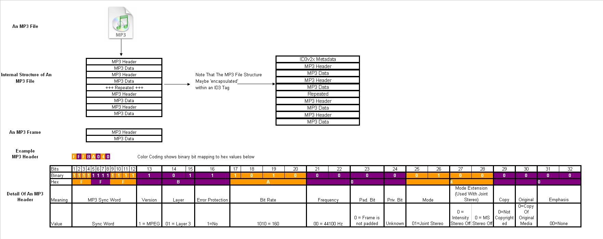
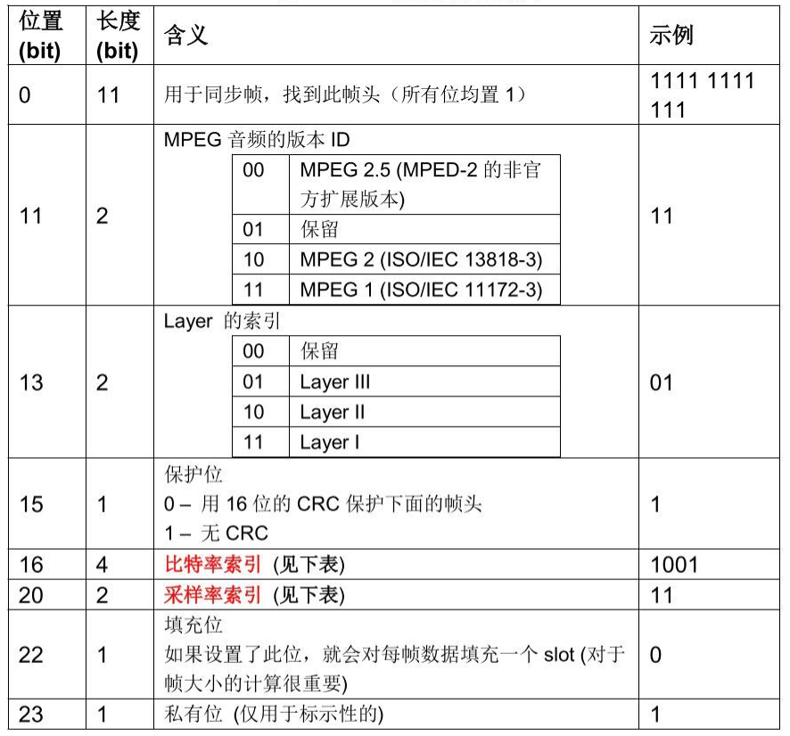
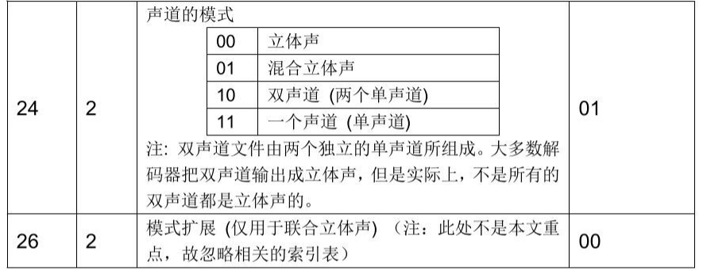
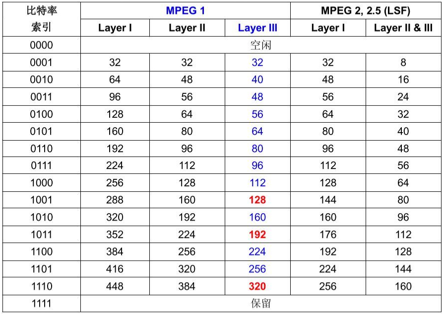
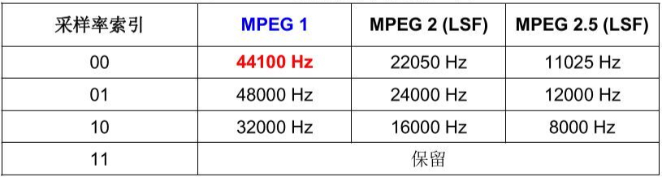
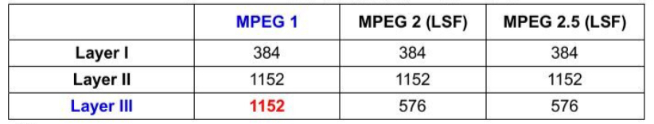
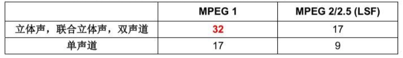

MP3 (MPEG-1, 2, 2.5 Audio Layer III)是常见的音频编码方案，可以支持8-48kHz采样率、8-320kbps的比特率。MP3有大量的软硬件支持，兼容性好，压缩比也比较高，尤其适合于128kbps以上的音乐音频编码。
概述
MP3文件可以分为两部分：元数据+音频数据。
元数据，主要是音频专辑、创作者等信息，目前一般是两种格式：一种是ID3V2格式，一种是ID3V1格式。其中ID3V2在文件头，长度不固定，而ID3V1在文件结尾位置，长度固定为128字节。
音频数据，具体来说，是一系列音频数据帧（Frame），每一帧是独立可播放的。每一个音频帧，又分为帧头跟数据载体，也就是Header与Payload。帧头又记录了该帧的采样率、比特率等信息。实际上Frame Header是我们主要研究的对象，因为这就是格式规范所在。
因此可以理解为，MP3文件=[ID3V2]+音频数据（Frame）+[ID3V1]。
我们可以先看下面这张结构示例图（来自wiki）：

元数据：ID3V2与ID3V1
ID3是一个音频文件标签的标准，详细可以参见官方文档。
ID3V1标准其字节分布：
| 位置（字节） | 长度（字节） | 说明 |
|---|---|---|
| 0 | 3 | “TAG” |
| 3 | 30 | 歌名 |
| 33 | 30 | 作者 |
| 63 | 30 | 专辑名 |
| 93 | 4 | 年份 |
| 97 | 28 | 附注（Comment） |
| 125 | 1 | 保留 |
| 126 | 1 | 音轨号 |
| 127 | 1 | MP3音乐类别（Genre Identifier） |
ID3V1的前3个字节为”TAG”。可以看到，ID3V1固定128字节无法拓展，存放信息较少（比如封面图等）。但ID3V1.1仍有不少支持。
ID3V2则是一个容器格式，允许拓展新的数据片段。ID3V2标签支持Unicode编码，并且ID3V2存放在音频文件文件头，使得实现音频流（streaming）更方便。另外，ID3V2对包含音乐同步的歌词也是支持的。目前主流的是ID3V2.3标准。
ID3V2.3的标签，每个标签都有一个标签头与若干标签帧或一个拓展标签头组成。
标签头
ID3V2.3的标签头为10个字节，具体如下定义：1
2
3
4
5
6
7
8
9char Header[3]; /*必须为"ID3"否则认为标签不存在*/
char Ver; /*版本号ID3V2.3 就记录3*/
char Revision; /*副版本号此版本记录为0*/
char Flag; /*存放标志的字节，这个版本只定义了三位，稍后详细解说*/
char Size[4]; /*标签大小，包括标签头的10 个字节和所有的标签帧的大小*/
一个典型的ID3v2.3的文件头：49 44 33 03 00 00 00 00 72 54 52 43 4B 00 00
其文件头开始是”ID3”，其版本0x3，副版本0。
Flag也是一个字节，也就是0bABCxxxxx，只定义了前3位，A是否非同步，B是否有拓展头部，C是否测试。
标签大小4个字节，但每个字节首位不用（&0x7F），也就是：0xxxxxxx 0xxxxxxx 0xxxxxxx 0xxxxxxx。1
Total Size = (Size[0]&0x7F)*0x200000+ (Size[1]&0x7F)*0x400 + (Size[2]&0x7F)*0x80 +(Size[3]&0x7F)
标签帧
每个标签帧都有10个字节的帧头与至少一个字节的不固定长度内容。
1 | char ID[4]; /*用四个字符标识一个帧，说明其内容，稍后有常用的标识对照表*/ |
帧标识用4个字符表示，说明一个帧的内容含义。
1 | TIT2=标题表示内容为这首歌的标题，下同 |
帧大小Size固定4个字节，8位都有效。
标识Flags为ABC00000IJK000001
2
3
4
5
6A -- 标签保护标志，设置时认为此帧作废
B -- 文件保护标志，设置时认为此帧作废
C -- 只读标志，设置时认为此帧不能修改(但我没有找到一个软件理会这个标志)
I -- 压缩标志，设置时一个字节存放两个BCD 码表示数字
J -- 加密标志(没有见过哪个MP3 文件的标签用了加密)
K -- 组标志，设置时说明此帧和其他的某帧是一组
音频数据帧
音频数据由一系列数据帧组成。每个帧的长度可能固定（CBR），也可能是不固定的（VBR）。每个帧都包括帧头与载荷数据。
Frame Header为4个字节，也就是32Bit。这32Bit中可以定义音频帧的版本格式、比特率/采样率、声道模式等。
具体含义参见下表：


帧头11位标志位，以FF开头。第16位是CRC标志位，为0时表示有CRC校验。如果有CRC校验，则帧头最后还有16bit的校验位。
其中的比特率、采样率索引表如下（需要结合版本，比如常见的MPEG V1,L3）：


常见的比特率如128kbps、192kbps以及320kbps，常见采样率就是44.1kHz。
在MPEG-1 Layer III中，有些特定的比特率需要与特定的声道模式组合才可使用：
| 比特率 | 允许的模式 |
|---|---|
| free | all |
| 32 | single channel |
| 48 | single channel |
| 56 | single channel |
| 64 | all |
| 80 | single channel |
| 96 | all |
| 112 | all |
| 128 | all |
| 160 | all |
| 192 | all |
| 224 | stereo, intensity stereo, dual channel |
| 256 | stereo, intensity stereo, dual channel |
| 320 | stereo, intensity stereo, dual channel |
| 384 | stereo, intensity stereo, dual channel |
音频帧长度
每个音频帧都是压缩后的音频数据，MPEG音频帧的每一帧的采样数都是固定的。具体数值参见下面图表：

每一帧的长度（byte）为：FrameLengthInBytes = SamplesPerFrame * BitsPerSample / 8 * Channels
对于比特率，我们知道：BitRate = SampleRate * BitsPerSample * Channels，于是：
FrameLengthInBytes = SamplesPerFrame / 8 * BitRate / SampleRate
这些参数都是每一帧帧头都有的字段。
需要注意的是，比特率是不固定的，因此数据帧的长度也不是固定的。并且为了适配比特率（使其精确满足比特率），有时还需要进行数据填充。比如对于128kbps比特率、44.1kHz的Layer III的数据帧，我们可以计算到帧长为417.96这样的奇怪帧长，但实际上编码时大部分的帧会使用418字节的帧长，而少部分帧是417字节。而音频帧头固定为4字节，所以整个MPEG帧大小为422字节。
所以帧长的计算修正为：数据帧长 = 每帧采样数 / 8 * 比特率 / 采样率 + 填充大小
对于Layer I的帧填充为4字节（slot大小），而Layer II和III的填充位则是1字节。于是：1
2
3
4
5Layer I：
FrameLengthInBytes = 48 * BitRate / SampleRate + Padding * 4
Layer II & III：
FrameLengthInBytes = 144 * BitRate / SampleRate + Padding
一个数据帧是否有填充位是由帧头的第22位来标识的，参见上面的图。
对于单个MP3文件而言，其音频采样率是固定的，可变的是各个帧所使用的比特率。而CBR与VBR的区别也正是在于此。
音频帧时间
每帧固定采样数，因此每帧的时间为：1
DurationPerFrame = SamplesPerFrame / SampleRate
比如对于常见的44.1kHz采样率的MP3文件，其每帧持续时间为：1
1152/44100*1000 = 26ms
MP3的播放时间
CBR的时间计算
对于CBR的计算时间是很直观的，知道音频的比特率及文件大小即可：1
Duration = FileSize(Bytes) * 8 bits/Byte / BitRate
FileSize严格来说应考虑除元数据外的音频数据大小，但通常标签数据相对于整个文件大小而言可以忽略不计。
VBR的时间计算
VBR计算播放时间，一种方式可以通过计算MP3文件的平均比特率，然后套用CBR的方式即可。但准确的平均比特率需要遍历整个MP3文件的，如果只是在文件头部采样（常有音乐沉默），可能会失真。
VBR变的只是帧的比特率，采样率是固定的，每一帧的时间也是固定的。所以另一种计算方式是根据总帧数来计算时长。1
Duration = Frames * SamplesPerFrame / SampleRate
要获知总帧数，最基本的方式仍然是可以进行遍历。但更高效的方式，显然也已经有人想过了——通过拓展头部记录总帧数。在第一个音频帧的音频数据区附加一个VBR头部，在其中记录总的帧数，已经是业界的事实标准。并且为了快速seek time，VBR头部中通常还附加了一个TOC的目录。
VBR头部
VBR头有常见的几种：XING、VBRI及LAME头部。单独说一下
XING头
XING头是XING公司推出的规范，大多数VBR的音频文件都添加了XING头。
XING头位于第一个音频帧的帧头之后（某个位置，通常是0x24的偏移）。包含XING头的整个第一个数据帧没有音频数据，因此即使解码器不处理XING头也可以解码。
1 | XING头起始位置 = MPEG第一帧帧头起始位置 + 帧头大小(4B) + 边信息大小。 |
首先需要定位MPEG第一帧，从文件头开始读取元数据（ID3V2.3标签头及各标签帧），然后通过MPEG数据帧头11个1的bit去定位第一帧的帧头位置。XING头在CBR中也可能存在，此时头部标识就不是XING而是Info了。
在MPEG音频的帧头的后面，有一些解码器会用到的一些信息，用于解码器控制音频流的播放，叫做边信息。边信息大小可参考：

对于MPEG-1 Layer III而言，边信息大小就是32Bytes，因此就是MPEG数据帧头的36Bytes（也就是0x24）的偏移处。
XING头的字段如下：
| 位置（字节） | 长度（字节） | 含义 | 示例 |
|---|---|---|---|
| 0 | 4 | 4个ASCII字符的VBR头 ID，要么是Xing，要么是Info，无NULL结尾（普通字符串都以NULL,即\0结尾） | ‘Xing’ |
| 4 | 4 | 存放一个标志，用于表示接下来存在哪些域/字段,各字段逻辑或的结果：0x0001存在总帧数（Frames）字段0x0002存在文件大小（Bytes）字段0x0004存在TOC字段0x0008存在音频质量指示字段 | 0x0007 就表示下面存在：总帧数文件大小总字节数TOC表 |
| 8 | 4 | 总帧数(Frames)，大端[可选] | 7344 |
| 8或12 | 4 | 文件总大小，单位字节，大端[可选] | 45000 |
| 8，12，16 | 100 | TOC表，大端[可选] | |
| 8或12, 16, 108, 112, 116 | 4 | 音频质量指示，最差0，最好100，大端[可选] | 0 |
VBRI头
VBRI头通常只存在于用Fraunhofer编码的MPEG音频文件中。并且位置是固定的。1
VBRI头起始位置 = MPEG第一帧帧头起始位置 + 帧头大小(4B) + 32。
VBRI头的字段如下：
| 位置（字节） | 长度（字节） | 含义 | 示例 |
|---|---|---|---|
| 0 | 4 | 4个ASCII字符的VBR头ID：“VBRI”无NULL结尾 | “VBRI” |
| 4 | 2 | 版本ID，大端，类型：DWORD | 1 |
| 6 | 2 | 延迟，类型：float | 7344 |
| 8 | 2 | 音频质量指示 | 75 |
| 10 | 4 | 文件总大小，大端，类型：DWORD | 45000 |
| 14 | 4 | 总的帧数，大端，类型：DWORD | 7344 |
| 18 | 2 | TOC表的表项数目，大端，类型：WORD | 100 |
| 20 | 2 | TOC表项的缩放因子，大端，类型：DWORD | 1 |
| 22 | 2 | 单个TOC表项的大小，单位字节，最大为4，大端，类型：DWORD | 2 |
| 24 | 2 | 帧数/表项，大端，类型：WORD | 845 |
| 26 | 用于检索的TOC表，整型值，可以通过每个表项大小乘于表项个数得到此TOC表的总大小，大端 |
LAME头
参考此处1
2
3
4
5
6
7
8
9
10
11
12
13
14
15
16
17
18
19
20
21
22
23
24
25
26
27
28
29
30
31
32
33
34
35
36
37
38struct __attribute__((__packed__)) XingTag
{
char m_tag[4]; // "Xing" or "Info"
uint32_t m_flags;
uint32_t m_frame_size; // if (flags & 0x1)
uint32_t m_stream_size; // if (flags & 0x2)
char m_num_toc_entries[100]; // if (flags & 0x4)
uint32_t m_vbr_scale; // if (flags & 0x8)
char m_lame_version[9]; // "LAME<major>.<minor><release>
uint8_t m_revision : 4;
uint8_t m_vbr_type : 4;
uint8_t m_lowpass_frequency;
uint32_t m_peak_signal; // 9.23 fixed point
uint16_t m_radio_replay_pad : 2;
uint16_t m_radio_replay_set_name : 2;
uint16_t m_radio_replay_originator_code : 2;
uint16_t m_radio_replay_gain : 10;
uint16_t m_audiophile_replay_gain;
uint8_t m_flag_ath_type : 4;
uint8_t m_flag_expn_psy_tune : 1;
uint8_t m_flag_safe_joint : 1;
uint8_t m_flag_no_gap_more : 1;
uint8_t m_flag_no_gap_previous : 1;
uint8_t m_average_bit_rate;
uint8_t m_delay_padding_delay_high;
uint8_t m_delay_padding_delay_low : 4;
uint8_t m_delay_padding_padding_high : 4;
uint8_t m_delay_padding_padding_low;
uint8_t m_noise_shaping : 2;
uint8_t m_stereo_mode : 3;
uint8_t m_non_optimal : 1;
uint8_t m_source_frequency : 2;
uint8_t m_unused; // set to 0
uint16_t m_preset;
uint32_t m_music_length;
uint16_t m_music_crc16;
uint16_t m_crc16; // if (protection bit)
};
MP3的压缩比
以采样率为44.1kHz为例。
原始PCM编码的音频数据，每秒的数据量为：1
DataSize = Channels * SampleRate * BitsPerSample
对于双声道、16位量化深度来算，DataSize=2 * 44100 * 16=1411200的bits。
而该原始音频数据使用MP3编码后，以128kbps比特率CBR的为例：1
CompressedSize = BitRate * 1 seconds
也就是DataSize=128000的bits。
因此压缩比：1
Ratio = DataSize / CompressedSize = Channels * SampleRate * BitsPerSample / BitRate
比特率越高，压缩比越低。
对于上述128kbps的MP3的压缩率，压缩比是 1411200 / 128000，大约是11左右。
对于MP3文件解析的示例，可以参考此文有完整的MP3文件解析的示例
参考：
MP3’s Tech: http://www.mp3-tech.org
評論